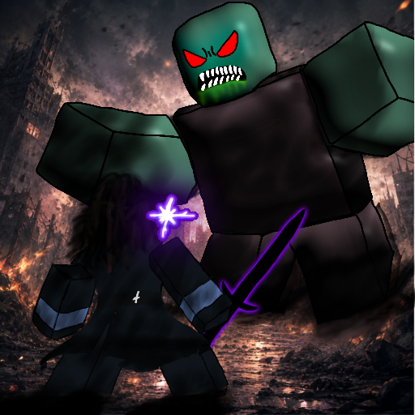
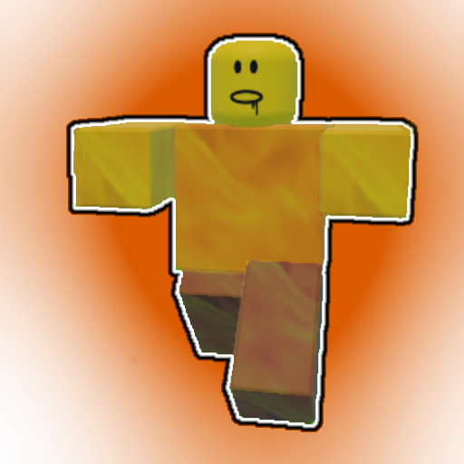

FEATURE 01
THE SIGNATURE SYSTEM
GOLD MARKET
ゴールドマーケット
ゴールドをプレイヤー同士で売買。価格の変動を見極め、買い取り、販売し、資産を増やそう。ゲーム内通貨を通して、取引や市場の考え方を学べるORSWの目玉機能。
TRADE · VALUE · STRATEGY
GG↗MARKET / LIVE YOUR STRATEGY
 ORIGIN RECODESECOND WORLD
ORIGIN RECODESECOND WORLD
OFFICIAL ROBLOX TOWER DEFENSE EXPERIENCE
オリジンリコード：セカンドワールド
荒廃した世界で生き残れ。生存者を守り、ゾンビの起源に隠された謎を解き明かせ。
WHEN THE WORLD COLLAPSED
DISCOVER THE ORIGIN.
世界は荒廃し、ゾンビが地上を徘徊している。
人類は、数々の謎に満ちた世界で生き残りをかけて戦う。
生存者を守り、残されたものを守り抜き、ゾンビの起源に隠された謎を解き明かせ。
! この世界に隠された真実は、まだ明らかになっていない。
敵の脅威を知る ⟶SEE THE WORLD IN MOTION
ゲームプレイ映像やアップデート動画をチェック。動画を選んでサイトに埋め込むこともできます。
公式ゲームトレーラー。荒廃した世界と、戦いの始まりをその目で。
MORE THAN A TOWER DEFENSE
ユニットを配置して戦うだけではない。交流し、学び、育て、マーケットで取引する。ORSWならではの体験へ。
THE SIGNATURE SYSTEM
ゴールドをプレイヤー同士で売買。価格の変動を見極め、買い取り、販売し、資産を増やそう。ゲーム内通貨を通して、取引や市場の考え方を学べるORSWの目玉機能。
A WORLD WITH PEOPLE
ロビーにいるNPCに話しかけ、新しい情報や知識を得よう。世界の住人との会話が、タワーディフェンスの枠を超えた冒険につながる。
BUILD YOUR OWN PATH
プレイヤーレベルを上げてスキルポイントを獲得。どの能力を伸ばすかはあなた次第。自分だけの成長ルートを選ぼう。
EVERY UNIT HAS POTENTIAL
強いユニットを手に入れて終わりではない。使い込んでマスタリーを上げ、さらなる強化を目指そう。ユニットを育てるのも、あなた自身を育てるのも、あなた次第。
CAPTURED FROM THE SECOND WORLD
ロビー、戦闘、マーケット、キャラクター。ゲーム内のスクリーンショットをここに掲載していきます。

ORIGIN RECODE 01 / MAIN VISUAL

THE LAST SAFE ZONE 02 / LOBBY

TACTICAL BATTLE 03 / GAMEPLAY

BOSS ENCOUNTER 04 / THREAT

GOLD MARKET 05 / ECONOMY

OFFICIAL GAME ICON 06 / ROBLOX

INVENTORY 07 / COLLECTION

NPC INTERACTION 08 / STORY

SKILL TREE 09 / PROGRESSION

STAGE SELECT 10 / EXPEDITION

UNIT SUMMON 11 / RECRUITMENT
※ 画像を指定のファイル名で assets/screenshots/ に追加すると、ここに表示されます。
KNOW YOUR ALLIES. FEAR YOUR ENEMIES.
個性豊かなユニット、謎に包まれたゾンビ、そして強大なボス。各キャラクターの物語と能力を紹介する図鑑へ。
 ALLY / COMMAND
ALLY / COMMAND生存者たちを導く司令官。
 ALLY / UNIT
ALLY / UNIT戦場を共にするユニット。
 ALLY / NPC
ALLY / NPCゾンビの謎に関わる科学者。
 THREAT / BOSS
THREAT / BOSS生存者たちの前に立ちはだかる強大な脅威。

THREAT / SPECIAL炎をまとった危険なゾンビ。
 THREAT / SPECIAL
THREAT / SPECIAL通常のゾンビとは異なる能力を持つ脅威。
キャラクターの画像を assets/characters/ に追加すると表示されます。詳しいステータスや設定は、情報が確定した後に追加できます。
ONE CREATORBUILT FROM A DREAM
私は日本人の学生で、昔からゲームを遊ぶことだけでなく、ゲームを作ること、絵を描くこと、何かを創造することが大好きでした。
ある日、別のプラットフォームで小さなゲームを制作しました。自分の作品をプレイヤーたちに遊んでもらえたことが、本当にうれしかった。その経験が、ゲームクリエイターになる夢を決めるきっかけになりました。
もっと高いクオリティのゲームを作りたい。そう思ってRobloxでの開発を決意しました。コードを書くことは難しく、簡単な道ではありませんでした。それでも新しい段階へ進むため、大好きなタワーディフェンスゲームを一人で作り始めました。
「こんな機能があったら面白いんじゃないか？」——そのアイデアを形にし、Gold MarketやNPCとの交流、スキルツリー、マスタリーなど、タワーディフェンスの枠を超えた仕組みを加えています。
ORIGIN RECODE: SECOND WORLDは、まだ完成ではありません。理想には遠く及ばない部分もあります。それでもアップデートを重ね、自分の夢をかなえる理想のゲームへと近づけていきます。
私は一人のクリエイター。
そして、最高のゲームクリエイターを目指しています。